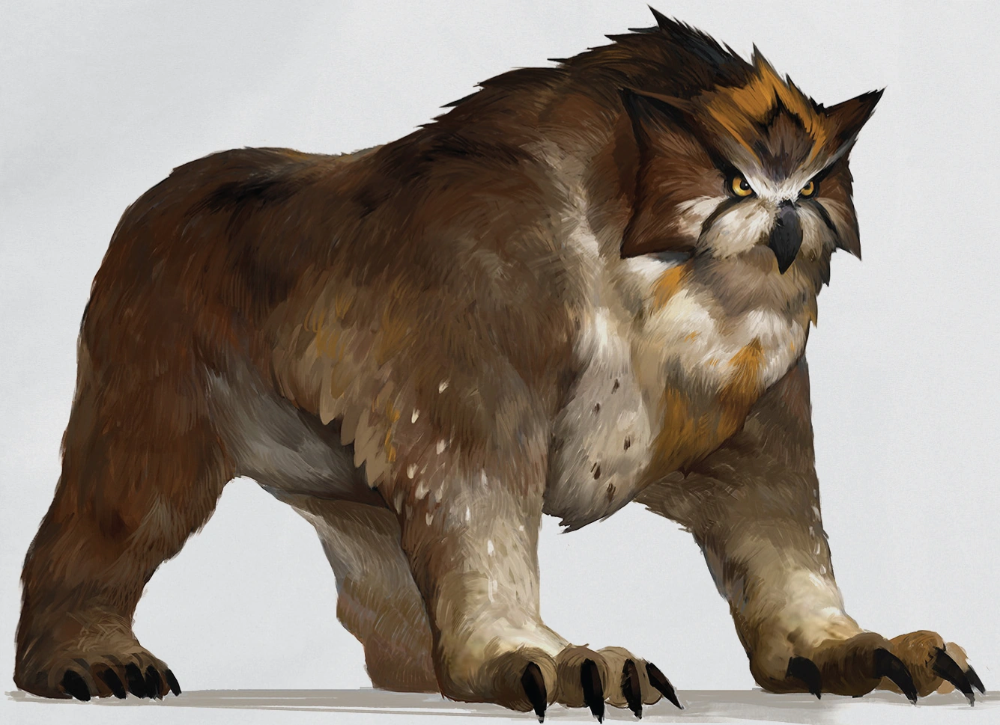

7 formas de saber si tu amigo es un buhoso disfrazado (La 5 te va a helar la sangre)
Por Osohub el Humano
Si jugas a Dungeons & Dragons, seguramente oiste hablar del temido buhoso, o como algunos lo llaman "owlbear". Se trata de una monstruosidad mitad oso, mitad búho, todo malo y es conocida por ser una de las criaturas más peligrosas del mundo del rol. Pero, ¿qué pasa si te digo que tu amigo podría ser un buhoso disfrazado? Aca te doy 7 formas de saberlo, y te aseguro que la número 5 te va a helar la sangre.
- El deseo de vivir en un bosque: Si tu amigo insiste en mudarse a un bosque y construir un nido en lo alto de un árbol, o vivir en una cueva, podría ser una señal de que es un buhoso disfrazado. Los buhosos son criaturas de los bosques, después de todo.
- Comer ratones crudos: ¿Tu amigo tiene antojos de ratones crudos? Los buhosos son carnívoros, y si tu amigo muestra un apetito por la carne cruda, podría ser una pista.
- Cabeza giratoria: Los buhosos tienen la habilidad de girar la cabeza casi 180 grados. Si tu amigo gira la cabeza de manera inusual, podrías estar frente a un buhoso disfrazado. Cuidado!!
- Plumas ocultas: Inspeccioná cuidadosamente la piel de tu amigo. Si descubris plumas ocultas bajo la ropa, es una señal segura de que está tratando de ocultar su verdadera naturaleza de buhoso.
- Mirada fija y aterradora: Los buhosos son conocidos por su mirada fija y aterradora. Si tu amigo te mira de una manera que te hace sentir incómodo, podría estar tratando de hipnotizarte con sus ojos de buhoso... O comerte de desayuno, muy posiblemente comerte de desayuno.
- Aleteos nocturnos: ¿Escuchaste ruidos de aleteo en medio de la noche en la casa de tu amigo? Los buhosos son criaturas nocturnas, y podrían estar realizando sus actividades nocturnas cuando todos piensan que están durmiendo.
- Ataques de furia: Los buhosos son famosos por sus ataques de furia. Si tu amigo experimenta súbitos arrebatos de ira y comienza a destrozar todo a su alrededor, podría ser un signo de que está luchando contra su verdadera naturaleza de buhoso (O contra el grupo).
Así que ahí lo tenes, 7 formas de saber si tu amigo es un buhoso disfrazado. Asegurate de estar alerta, los buhosos pueden ser criaturas impredecibles y peligrosas. Y no te olvides: "Ante la duda; bola de fuego" y "Mejor incendiar que curar"